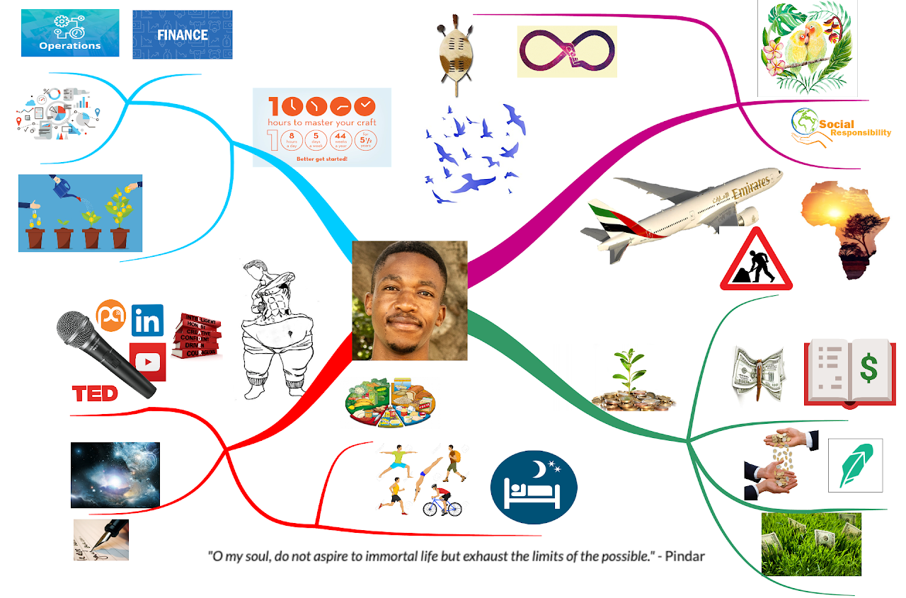

Live → Blog
January 2, 2020

In 2012, an Indian man came to my Senior Secondary school in my village with a private school student. This man claimed that he had some secrets that could help anyone use their mind and become really smart. The students at my school were excited. They gave 20 random words to the private school student to memorize within a few minutes and repeat in any order on demand. The girl was impressive but I was very skeptical. It was my skepticism that inspired me to join the UCMAS Botswana Mindmapping class. I would end up working for this man and touring the country with him, memorizing words and numbers for multitudes of students. I took two things out of the experience: the power of mindmapping in boosting productivity and the magic of Vision Boards in keeping our dreams. This page is dedicated to showcasing all the iterations of my Vision Board and celebrating all the items on my Vision Board that have been realized.
My first Vision Board was created in 2014. At the time, I was convinced I had a crush on MD and so it was natural to add to my board that I wanted to marry her (cringe!). I wanted to live in a mansion with swimming pools and sport courts. I dreamed of being a global citizen, traveling the world and thinking of the whole world as my home. I wanted to go to Stanford, graduate, and go on to have a successful job in Finance. Lastly, since I was a kid, I wanted to own an Audi car. I neither married MD nor entered into any romantic friendship with her, and have long discontinued my pursuit of this goal. When I was applying to colleges, I had forgotten that I had put Stanford on my Vision Board. In fact Stanford was not on the list of schools I planned to apply to. I was afraid to fail, so I had omitted it. But in a last minute change of heart, I applied and got in. I have graduated with my first degree from there and am currently working on my second Stanford degree. Thanks to the opportunities I got while at Stanford, I have managed to live my dream of traveling the world: I have been to 14 countries and 10 US States. The rest of the dreams remain unfulfilled, but they have evolved in ways that will become clear as we continue down this timeline of Vision Boards.
In 2016, having fulfilled most of the dreams on my Vision Board, it was time for an update. The evolution of my Vision Board from this point on is synchronized with the evolution of my Values and Guiding Pillars. As an alumnus of the United World Colleges and a MasterCard Foundation Scholar at Stanford, I found myself thinking a lot about the kind of life I wanted to lead. Especially since I felt that the opportunities UWC and MCF had given me were given in the hope that my life would impact many beyond myself. I considered myself a steward of the dreams of communities back home. I had a duty to make the best of the opportunity. I drew inspiration from the UWC Costa Rica list of competencies and defined my own list of priorities to put on my Vision Board: Academic Excellence, Leadership Development, Financial Sustainability, Healthy Lifestyle, Social Responsibility, and Meaningful Relationships. My primary role was a student, and so I put on my Vision Board that I was going to manage my learning time, make use of resources at my disposal (such as Office Hours), and have fun while going through school. Stanford was hard, so Academic Excellence was not always easy to achieve. I aimed to attend conferences and consume content on a regular basis that would motivate my growth as a transformative leader. A good chunk of the travel I have been able to do was primarily to attend conferences of the kind that I dreamed of on this Vision Board. Financial Sustainability was inspired by my inability to help support my family back home while also advancing my other objectives. Since I could not cut down on the amount I was sending home, I had to prioritize my campus job as it was necessary to augment my MCF stipend. I chose to focus on Healthy Lifestyle because I knew my stressful lifestyle made it more likely that I would fail to take care of myself. When I graduated from UWC, I was bestowed the Social Responsibility Award for my dedication to a life of service when I was at the school. While I was conflicted about being rewarded for leading through service, I was unshaken on my resolve to continue to seek opportunities in the simplicity of the day-to-day to serve. I also wanted to make a notable impact, and hoped to affiliate myself with a larger cause. I found Tutoring For Community to be a worthwhile cause to dedicate some of my Saturdays to. Finally, being in a large school like Stanford it was necessary to be intentional about investing in a few meaningful relationships. My Stanford experience was rich for the people I shared it with. At this time, my new romantic interest was YM. I have never understood my obsession with romance.
After identifying the original list of my core values, I consolidated the pillars of my Vision Board. The original list of core values was authenticity, community, creativity, curiosity, excellence, and growth. A later update of my core values collapsed authenticity and community into the even more powerful value of Ubuntu. Leadership and Healthy Lifestyle were combined to create the pillar of Personal Development. Personal Development is based on the idea that one cannot pour out of an empty tea pot, so it is a pillar of my Vision Board dedicated to keeping my tea pot filled. Social Responsibility and Meaningful Relationships were joined to create Meaningful Communities. Financial Sustainability was updated to reflect my desire to invest in stocks and also to commit to a savings plan. When it came to Academic Excellence, I felt putting things like managing time and attending office hours was too refined for a Vision Board. Furthermore, those were no-brainers. So I decided to set my eyes on an MBA at the Stanford Graduate School of Business. On top of that, I wanted to do that as a Knight-Hennessy Scholar. This provided me an exciting target to aim for.
This update was more an aesthetic change than anything. The only additions were the idea of journaling as part of my self-care practice and the reintroduction of romantic companionship as something I sought. The only difference is here the romantic companionship was as an abstract concept, rather than a specific person. I realized that when I put a specific person as a the targeted companion, then I am susceptible to staying in relationships that are otherwise suboptimal for the sake of fulfilling what is on my Vision Board. But if it is abstract, governed only by a set of ideals and standards, I would only commit to pursuing a given person only to the extent that they lived up to those ideals. Clearly love and engineering do not mix well. Around this time, I started the process to purchase my first piece of land. I decided one of the ways that I am going to remain connected to my native land of Botswana is through ownership of vast areas of land. But one has to start small.
Stanford is one of those places where almost everyone who goes there is super ambitious. Especially on the career side of things. This update was to catch up to this career aspiration game. I added companies that I would love to work at. Google and Facebook were added because they are the staples. Everyone wants to work there. I would later realize that it is hypocritical of me to dream of working at Facebook when I was largely distrustful of their product to the extent of abstaining from their use. I added McKinsey and Bain because I felt I should be curious about consulting and they were considered the best consulting firms. Go big or go home, right? ATKearney I added because I knew someone who worked there and liked it by association. Southwest, JetBlue, and Emirates were added because of my general fascination with commercial aviation. Emirates being my most preferred of these, although it would mean saying goodbye to the American dream. But for an organization I like enough, I would relocate to anywhere. Southwest appealed to me because of the success of their business model and their reputation. JetBlue I liked because it was the most recent airline startup and I assumed the most innovative. I reverted to the previous model because I realized adding specific companies to the Vision Board was the same as adding specific girls to the Vision Board. At this time in my life, I was beginning to realize that there were some individuals who I could do without. So I added the "Keep Calm and Ditch Toxic Friends" sticker as a reminder to walk away from any relationship that drained me. I removed it before the next update as I felt it was too petty to be on my Vision Board. I was not denying my pettiness, but I did not want to nurture it as a trait.
Following my research experience in my department in the summer of 2018, I was interested in pursuing a Masters in my program. If I still planned to do an MBA later in life, then I would have to apply to the MSc in MS&E program before I finished through the Stanford Coterminal degree program. So I added this to my Vision Board, including the need to ace the GRE exam. I also added sufficient sleep as one of the ways I planned to take care of myself.
I was successfully admitted to the Masters Program. To replace its place on the Vision Board, I added my broad career aspiration: to master Finance, Operations, and Analytics, in preparation for my destiny as a Venture Capitalist in Africa. I also opened my mind about where I would want to pursue my MBA. I included MIT Sloan School of Management and Harvard Business School. This is in a desire to diversify my education experience, instead of getting all my degrees from one place.
The current version of my Vision Board has had a slight aesthetic change. It also reinforces the idea that to master the skills I need to facilitate the entrepreneurial process in Africa post 2025, I have to put in the hours and clock in some actual work experience. Furthermore, it incorporates my updated belief that friendships and relationships should exist on a tiered system with varying levels of love, reciprocity, and security. Finally, my Vision Board reflects that my end game is in Africa. I am sure there will be more iterations of this in time. I think of my Vision Board as my aspirational long term goals from which I draw my short term and medium term goals. The Vision Board is increasingly becoming populated with guiding principles that inform my life's decisions rather than actual goals. Feel free to share with me how you keep track of your longer term goals and how they evolve over time.
← Return to Blog